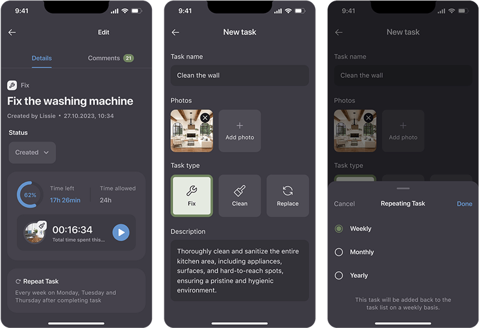

For contractors
Construction, renovation, and cleaning companies looking for a steady stream of orders and a way to manage jobs efficiently through a digital platform.
May 2023 - Sep 2024
Role
UX/UI, Brand, Research
Platform
Flutter (iOS, Android), Web
The Maintain App is a subscription-based property maintenance solution designed to streamline communication between builders and property owners.
As the UX/UI Designer for The Maintain App, I played a key role in shaping the user experience for both property owners and service providers. My contributions included:
Create a community where property owners know exactly who to turn to, and construction businesses thrive through meaningful, long-term client partnerships.
This mission statement guided design decisions by keeping the focus on trust, transparency, and long-term collaboration between users. We aimed to simplify and professionalize interactions in property maintenance. For example, features like contractor verification and task tracking were specifically designed to support these values and make the experience more straightforward for both owners and workers.
For contractors
Construction, renovation, and cleaning companies looking for a steady stream of orders and a way to manage jobs efficiently through a digital platform.
For property owners
Apartment and house owners, who need reliable and verified professionals to take care of ongoing maintenance, cleaning, and repairs without hassle.
To ensure The Maintain App effectively addresses the needs of its core users, I conducted thorough research to identify their key requirements and pain points. The following outlines the specific needs of both property owners and contractors.
Property owners:
Quick & reliable access
Quick access to verified professionals.
Request management
Convenient service request management.
Pricing options
Transparent pricing and subscription options.
Communication
Reliable communication with service providers.
Contractors:
Job opportunities
Consistent stream of job opportunities.
Order management
Efficient scheduling and order management.
Trust & vetting
Increased client trust through platform vetting.
Contract tools
Tools to manage contracts and availability.
A competitive analysis was conducted, with a particular focus on UpKeep as the primary competitor and reference point. This analysis helped identify key industry standards, user expectations, and potential gaps in existing solutions. The user stories and competitive analysis informed the initial wireframing stage.

Designing two themes required careful color contrast planning to ensure readability and accessibility. The approach focused on maintaining brand consistency across both themes while adjusting for different lighting conditions. Special attention was given to component styling and iconography to ensure a seamless experience for all users.
Contract creation & management. Workers create contracts specifying the number of available work hours per month. Once the contract is created and accepted, both parties can start creating and completing tasks.
Task list & time tracking. Displays active and archived tasks. An active task timer tracks time spent on each job. Property owners can see the time spent and estimate the remaining hours based on their contract.
Task creation & details. Users can create new or recurring tasks, attach photos, and provide task details for better clarity.
Timetable & scheduling. Property owners can set unavailable time slots, while workers define their availability and see the blocked slots.
This feature allows users to create detailed tasks, which can be either one-time or recurring. This ensures that all necessary work is captured and can be scheduled appropriately. The ability to attach photos provides visual context, which is especially helpful for maintenance tasks where the specific issue or area needs to be clearly identified. Providing task details ensures that there is no ambiguity about what needs to be done, leading to more efficient and effective task completion.
The system allows property owners to specify when they cannot accept service providers (e.g., "unavailable on Tuesdays and Thursdays between 2 PM and 6 PM"). Workers can then input their general availability (e.g., "available on weekdays from 10 AM to 7 PM") and will see the property owner's blocked slots.
The app matches property owners with workers whose availability aligns with the owner's needs, while respecting the owner's blocked slots. This streamlines scheduling but ensures owners retain control over when work is performed.
Scalability
The subscription model provides opportunities for expansion into new regions and additional service categories.
Future enhancements
AI-driven task recommendations and deeper integration with financial management tools to further optimize property upkeep.
The development of The Maintain App yielded several key insights: building trust between property owners and workers is crucial for better user engagement; design systems must accommodate diverse user preferences, as highlighted by the implementation of light and dark modes; ongoing usability testing and iteration are important to balance simplicity and functionality; and close collaboration with developers is vital for smooth implementation and effective problem-solving.